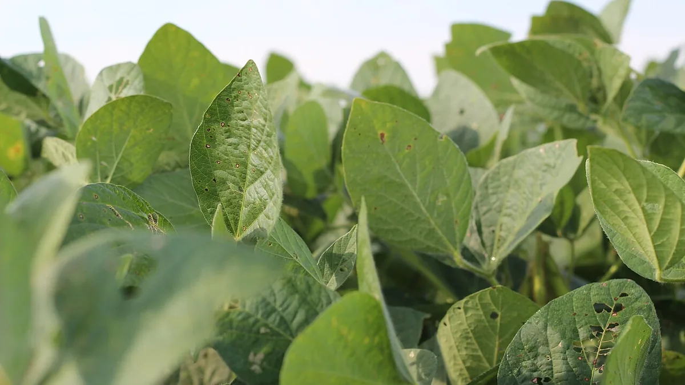

किसान भाइयों, मध्य प्रदेश को भारत की "सोयाबीन राजधानी" कहा जाता है। देश के कुल सोयाबीन उत्पादन का लगभग 45–50% अकेले MP में होता है। इंदौर, उज्जैन, देवास, धार, रतलाम और सीहोर जिले इसके मुख्य केंद्र हैं।
सोयाबीन MP की सबसे महत्वपूर्ण खरीफ नकदी फसल है। इसमें लगभग 40% प्रोटीन और 20% तेल होता है — यही कारण है कि प्रोसेसिंग उद्योग, पशु आहार निर्माता और निर्यातक इसकी भारी मांग रखते हैं। इसके अलावा सोयाबीन की जड़ों में Rhizobium बैक्टीरिया मिट्टी में नाइट्रोजन स्थिर करते हैं — यानी यह फसल जमीन को भी सुधारती है।

📷 MP की काली कपासिया मिट्टी — सोयाबीन के लिए आदर्श। नमी लंबे समय तक रोकती है और पोषक तत्वों से भरपूर है।
✅
क्या आप जानते हैं? सोयाबीन के बाद गेहूं या चना बोने पर नाइट्रोजन खाद की 20–25 kg/हे. बचत होती है — क्योंकि सोयाबीन की जड़ें मिट्टी में नाइट्रोजन छोड़ती हैं। यह MP का सबसे लोकप्रिय फसल चक्र है।
💰
आज का सोयाबीन मंडी भाव — LIVE देखेंइंदौर, उज्जैन, देवास, धार — सभी मंडियों के ताजा भाव एक जगह
उन्नत किस्में — MP के लिए सबसे अच्छी सोयाबीन कौन सी?
सही किस्म का चुनाव ही अच्छी उपज की पहली सीढ़ी है। MP की जलवायु और काली मिट्टी के लिए इन किस्मों की सिफारिश की जाती है:
🫘
JS 95-60
अवधि: 92–95 दिन · सबसे लोकप्रिय
MP का सबसे ज्यादा बोई जाने वाली किस्म। उपज 20–25 क्विंटल/हे.। पीला मोजेक वायरस के प्रति सहनशील।
🫘
JS 93-05
अवधि: 90–95 दिन · सूखा सहनशील
कम वर्षा वाले क्षेत्रों के लिए आदर्श। उपज 18–22 क्विंटल/हे.। फलियां नीचे से ऊपर तक समान रूप से भरती हैं।
🫘
NRC 86 (Shyam)
अवधि: 95–100 दिन · उच्च उपज
ICAR-NRCS की नई किस्म। उपज 25–30 क्विंटल/हे.। पत्ती खाने वाले कीटों के प्रति प्रतिरोधी। तेल की मात्रा 21%।
🫘
JS 20-34
अवधि: 95–100 दिन · नई किस्म
JNKVV की नवीनतम किस्म। उपज 28–32 क्विंटल/हे.। पीला मोजेक और चारकोल रॉट के प्रति प्रतिरोधी।
🫘
RVS 2001-4
अवधि: 97–102 दिन · देर से बुवाई
जुलाई 15 के बाद बुवाई के लिए उपयुक्त। उपज 20–24 क्विंटल/हे.। बारिश में देरी होने पर भी अच्छी फसल।
⚠️
बचें — पुरानी किस्में
JS 72-44, Bragg, Punjab-1
इन किस्मों में रोग प्रतिरोधकता कम हो गई है। पीला मोजेक का प्रकोप अधिक। नई प्रमाणित किस्में ही बोएं।
💡
बीज खरीदने से पहले जांचें: बीज पर Tag (बैग टैग) जरूर देखें — Certified Seed (नीला टैग) या Foundation Seed (सफेद टैग) ही खरीदें। बाजारी बीज में अंकुरण दर कम और मिलावट की संभावना अधिक होती है।
🌱
बुवाई — सही समय, तरीका, खाद और बीज उपचार
📅
बुवाई का सही समय और तरीका
✦ जून 20 से जुलाई 10 — सबसे उपयुक्त खिड़की
पहली अच्छी बारिश (75–100 mm) के बाद जब मिट्टी में 8–10 सेमी गहराई तक नमी हो, तभी बोएं।
कतार से कतार: 45 सेमी, पौधे से पौधे: 5–7 सेमी — इससे हवा और धूप पर्याप्त मिलती है।
बीज की गहराई 3–4 सेमी — ज्यादा गहरा बोने पर अंकुरण कमजोर होता है।
BBF (Broad Bed Furrow) विधि अपनाएं — जलभराव और कटाव दोनों से सुरक्षा।
रोग और कीट नियंत्रण — MP में सोयाबीन के मुख्य खतरे
MP में सोयाबीन की फसल को कुछ रोग और कीट बहुत नुकसान पहुंचाते हैं। इन्हें समय पर पहचानकर सही उपाय करना जरूरी है:
🦠 प्रमुख रोग और उपाय
🟡
पीला मोजेक वायरस (YMV)
सबसे खतरनाक · सफेद मक्खी से फैलता है
पत्तियां पीली धब्बेदार हो जाती हैं। उपज 70–80% तक घट सकती है। प्रतिरोधी किस्म बोएं + Imidacloprid से बीज उपचार।
🟤
चारकोल रॉट (Macrophomina)
सूखे बाद · मिट्टी जनित
तना अंदर से काला, पौधा मुरझाकर मर जाता है। बीज उपचार (Thiram+Carbendazim) और फसल चक्र से नियंत्रण।
🔵
गर्दन सड़न (Rhizoctonia)
अधिक नमी · शुरुआती अवस्था
बुवाई के 10–15 दिन बाद जड़ें काली पड़ जाती हैं। Trichoderma से बीज उपचार + जल निकासी सुनिश्चित करें।
🔴
एन्थ्राकनोज (Colletotrichum)
बारिश के बाद · फली अवस्था में
फलियों पर लाल-भूरे धब्बे, बीज सड़ जाते हैं। Carbendazim 1g/L पानी का छिड़काव फूल आने पर करें।
🐛 प्रमुख कीट और उपाय
कीट
पहचान
नुकसान
उपाय
सफेद मक्खी (Whitefly)
पत्तियों की निचली सतह पर सफेद छोटे कीट
YMV वायरस फैलाती है
Thiamethoxam 25WG — 100g/हे.
तना मक्खी (Stem Fly)
तने में सुरंग, पौधा मुरझाता है
10–40% उपज नुकसान
Imidacloprid 600FS से बीज उपचार
पत्ती खाने वाली इल्ली (Spodoptera)
रात को पत्तियां चट कर देती है
पत्तियां कंकाल बन जाती हैं
Chlorpyrifos 20EC — 1.5 L/हे. या Bt Spray
चने की इल्ली (Helicoverpa)
फलियों में छेद, दाने खाती है
30–50% उपज नुकसान
Indoxacarb 14.5SC — 400 ml/हे.
माहू (Aphids)
पत्ती व तने पर छोटे हरे कीट
रस चूसना + वायरस
Dimethoate 30EC — 1L/हे. या नीम काढ़ा
⚠️
IPM (एकीकृत कीट प्रबंधन) अपनाएं: हर बारिश के बाद फसल का नियमित निरीक्षण करें। आर्थिक क्षति स्तर (ETL) पार होने पर ही कीटनाशक छिड़कें — अनावश्यक छिड़काव से लागत बढ़ती है और मित्र कीट मरते हैं।
🚜
कटाई, भंडारण और बिक्री — अधिकतम मुनाफा कैसे लें?
कटाई और बिक्री का सही समय और तरीका जानना उतना ही जरूरी है जितनी खेती करना। यहां जानें कैसे अधिकतम फायदा उठाएं:
✂️
सही समय पर कटाई — देर-सवेर दोनों नुकसानदायक
✦ 85–90% फलियां भूरी होने पर कटाई करें
जब 85–90% फलियां सुनहरी-भूरी हो जाएं और पत्तियां गिर जाएं, तभी काटें।
सुबह ओस में न काटें — धूप निकलने के बाद 9 बजे के बाद कटाई करें।
थ्रेशिंग में देरी न करें — खेत में पड़ी फसल में बारिश से फलियां चटक जाती हैं।
Combine Harvester से कटाई सबसे तेज और नुकसान कम — 1–2% फसल हानि बनाम हाथ से 5–8%।
🏚️
भंडारण — सही नमी और तापमान जरूरी
✦ 12% से कम नमी पर ही भंडारण करें
भंडारण से पहले बीज की नमी 10–12% से कम होनी चाहिए — नहीं तो फफूंद लगती है।
साफ, सूखी और ठंडी जगह रखें। Hermetic Bags (Zero Oxygen) सबसे अच्छा विकल्प है।
Aluminium Phosphide (Celphos) की 1 गोली/टन — कीट नियंत्रण के लिए।
3 महीने बाद भाव बढ़ने पर बेचें — MSP से 10–15% अधिक दाम आमतौर पर जनवरी–मार्च में मिलते हैं।
💰
बिक्री — MSP और बेहतर भाव कैसे पाएं?
✦ MSP पंजीकरण + eNAM + FPO — तीन रास्ते
MSP पर बिक्री: mpeuparjan.nic.in पर रजिस्ट्रेशन करें — ₹4,892/क्विंटल (2024–25) गारंटीड।
eNAM: enam.gov.in पर पंजीकरण — ऑनलाइन बोली से कभी-कभी MSP से अधिक भाव।
FPO के जरिए: समूह में बड़ी मात्रा बेचने पर सोया प्रोसेसर सीधे खरीदते हैं — परिवहन खर्च बचता है।
इंदौर सोया बाजार देश का सबसे बड़ा — वहां के भाव जरूर चेक करें बेचने से पहले।
📌
MSP पंजीकरण याद रखें: MP में MSP पर सोयाबीन बेचने के लिए mpeuparjan.nic.in पर बुवाई के बाद रजिस्ट्रेशन जरूरी है — फसल कटने का इंतजार न करें। आधार, बैंक खाता और खसरा नंबर तैयार रखें।
❓
अक्सर पूछे जाने वाले सवाल
1सोयाबीन में पत्तियां पीली क्यों हो जाती हैं?
दो मुख्य कारण हैं — पीला मोजेक वायरस (YMV) और Zinc की कमी। YMV में पत्तियों पर धब्बे और कच्चापन दिखता है, Zinc कमी में पूरी पत्ती पीली लेकिन नसें हरी रहती हैं। Zinc कमी में ZnSO₄ का पर्णीय छिड़काव करें।
2JS 95-60 और JS 20-34 में से कौन सी किस्म बेहतर है?
JS 20-34 नई और अधिक उपज देने वाली किस्म है (28–32 क्विंटल/हे.) और रोग प्रतिरोधकता भी बेहतर है। लेकिन JS 95-60 अभी भी सबसे व्यापक रूप से उपलब्ध और किसानों में विश्वसनीय है। यदि प्रमाणित JS 20-34 बीज उपलब्ध हो तो उसे प्राथमिकता दें।
3सोयाबीन में Rhizobium कल्चर क्यों जरूरी है?
Rhizobium बैक्टीरिया सोयाबीन की जड़ों में गांठें बनाकर वायुमंडलीय नाइट्रोजन को मिट्टी में स्थिर करते हैं — यह फसल को 60–80 kg/हे. नाइट्रोजन मुफ्त में देता है। बिना Rhizobium के अधिक यूरिया डालना पड़ता है और लागत बढ़ती है।
4जुलाई 15 के बाद बुवाई हो जाए तो क्या करें?
देर से बुवाई में RVS 2001-4 या JS 93-05 किस्म बोएं जो कम समय में तैयार होती हैं। बीज दर 10% बढ़ाएं। जुलाई 25 के बाद बुवाई से उपज में 20–30% की गिरावट आती है — इसलिए हर हाल में जुलाई 20 तक बुवाई पूरी करें।
5सोयाबीन की फसल में जलभराव हो जाए तो क्या करें?
तुरंत जल निकासी की व्यवस्था करें — खेत में नाली बनाकर पानी निकालें। 48 घंटे से अधिक जलभराव होने पर जड़ें सड़ने लगती हैं। पानी निकलने के बाद Trichoderma का drench करें और DAP का 2% पर्णीय छिड़काव करें।
6सोयाबीन में फलियां कम बन रही हैं तो क्या करें?
फूल आने के समय (35–40 दिन) Boron 0.2% + Molybdenum 0.05% का पर्णीय छिड़काव करें। यह परागण बेहतर करता है और फलियों की संख्या बढ़ाता है। साथ ही फूल आने के समय सिंचाई सुनिश्चित करें — सूखा सबसे बड़ा कारण है।
7क्या सोयाबीन में जैविक खेती संभव है?
हां — सोयाबीन जैविक खेती के लिए बहुत उपयुक्त है क्योंकि यह खुद नाइट्रोजन बनाती है। Rhizobium + Trichoderma + जीवामृत के संयोजन से रासायनिक खाद की जरूरत 70–80% कम होती है। जैविक प्रमाणित सोयाबीन का निर्यात मूल्य 2–3 गुना तक अधिक मिलता है।
✅ मुख्य बातें — याद रखें
JS 20-34 या NRC 86 जैसी उन्नत किस्में बोएं — पुरानी किस्मों में रोग प्रतिरोधकता कम हो चुकी है
जून 20 – जुलाई 10 — बुवाई की सबसे अच्छी खिड़की; इसके बाद हर दिन देर से उपज घटती है
Rhizobium + Thiram से बीज उपचार — यह अकेला कदम उपज 20–25% बढ़ा सकता है
BBF विधि अपनाएं — जलभराव MP का सोयाबीन का सबसे बड़ा दुश्मन है
पीला मोजेक वायरस दिखे तो तुरंत प्रभावित पौधा उखाड़ें और Imidacloprid से सफेद मक्खी नियंत्रित करें
mpeuparjan.nic.in पर MSP रजिस्ट्रेशन जरूर करें — बुवाई के तुरंत बाद
भंडारण में 12% से कम नमी — जनवरी–मार्च में बेचें, भाव सबसे अच्छे मिलते हैं
🫘
KrashiMitra.in — आपका विश्वसनीय कृषि साथी
सोयाबीन से जुड़ा कोई सवाल? रोग पहचान से लेकर मंडी भाव तक — KrashiMitra AI हिंदी में मुफ्त जवाब देता है।